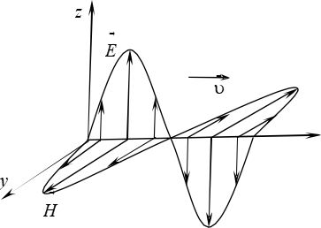

1.Теоретическое введение

Световая волна  является электромагнитной волной, т. е. совокупностью электрического и магнитного полей, которые,
изменяясь со временем, порождают друг друга и распространяются в пространстве со скоростью света. По сути
электрическое и магнитное поля являются проявлением одной и той же сущности, которую называют электромагнитным полем.
Следовательно, световая волна – это электромагнитное возмущение, которое распространяется в пространстве с течением
времени.
является электромагнитной волной, т. е. совокупностью электрического и магнитного полей, которые,
изменяясь со временем, порождают друг друга и распространяются в пространстве со скоростью света. По сути
электрическое и магнитное поля являются проявлением одной и той же сущности, которую называют электромагнитным полем.
Следовательно, световая волна – это электромагнитное возмущение, которое распространяется в пространстве с течением
времени.
Электромагнитная волна характеризуется векторами E (напряженности электрического поля) и H (напряженности магнитного поля).
Из теории Максвелла  следует, что электромагнитная волна является поперечной. Это означает, что векторы E и H взаимно
перпендикулярны и колеблются перпендикулярно вектору скорости ν распространения волны. На рис. 64.1 показана мгновенная
картина распределения напряженностей электрического и магнитного полей вдоль направления светового луча. Векторы E и H
изменяются синфазно, т. е. они одновременно обращаются в ноль и одновременно достигают максимума. При этом
тройка векторов ν, E , H всегда остается правой.
следует, что электромагнитная волна является поперечной. Это означает, что векторы E и H взаимно
перпендикулярны и колеблются перпендикулярно вектору скорости ν распространения волны. На рис. 64.1 показана мгновенная
картина распределения напряженностей электрического и магнитного полей вдоль направления светового луча. Векторы E и H
изменяются синфазно, т. е. они одновременно обращаются в ноль и одновременно достигают максимума. При этом
тройка векторов ν, E , H всегда остается правой.
Экспериментально установлено, что практически все действие света на фотоэлемент, фотопленку, флюоресцирующий экран и другие устройства для его регистрации определяется электрическим полем электромагнитной волны, поэтому вектор E называют световым вектором.
Излучение светящегося тела слагается из волн, испускаемых его атомами. Излучение отдельного атома продолжается около 10–8 с. Излучив, атом через некоторое время, придя в возбужденное состояние, излучает опять и т. д. Одновременно излучает множество атомов. Порожденные ими цуги волн, налагаясь друг на друга, образуют испускаемую телом световую волну. В свете, испускаемом обычными (не лазерными) источниками – этот свет называют естественным или неполяризованным – направления колебаний светового вектора E для каждого цуга ориентированы случайным образом. Поэтому в результирующей световой волне колебания светового вектора происходят в разных направлениях, быстро и хаотично сменяя друг друга. Это надо понимать так, что при прохождении световой волны через некоторую точку направления колебаний светового вектора быстро и беспорядочно сменяют друг друга. Условно это изображают как показано на рис. 64.2, а, где направление распространения света перпендикулярно плоскости рисунка.

Поляризованным называют свет, в котором направления колебаний светового вектора E в любой точке пространства упорядочены каким-либо образом. Различают плоскополяризованный (или линейно поляризованный) свет, эллиптически поляризованный и поляризованный по кругу свет.
Плоскполяризованный свет (или линейно поляризованный) – это свет, в котором колебания светового вектора E происходят в одной плоскости (рис. 64.2, б). Плоскость, в которой колеблется вектор E, называют плоскостью поляризации (плоскостью колебаний светового вектора).

Эллиптически поляризованным называют свет, в котором вектор E вращается вокруг направления распространения волны, одновременно изменяясь периодически по модулю. При этом конец вектора E описывает эллипс (рис. 64.2, в). Поляризованный по кругу свет имеет место тогда, когда конец вектора E описывает окружность (рис. 64.2, г). В зависимости от направления вращения вектора E различают правую и левую эллиптические (или круговые) поляризации: если смотреть навстречу распространению волны, и вектор E при этом поворачивается по часовой стрелке, то поляризацию называют правой, если против часовой стрелки, левой.
Плоскополяризованный свет можно получить из естественного света с помощью приборов, которые называют поляризаторами. Эти приборы свободно пропускают колебания светового вектора, параллельные плоскости, которую называют плоскостью пропускания поляризатора. Колебания же, перпендикулярные этой плоскости, полностью или частично задерживаются. В первом случае поляризатор является идеальным, а во втором – несовершенным. Естественный свет, прошедший через идеальный поляризатор, становится плоскополяризованным, плоскость поляризации которого совпадает с плоскостью пропускания поляризатора. На выходе из несовершенного поляризатора получается свет, в котором колебания одного направления преобладают над колебаниями других направлений. Такой свет называют частично поляризованным. В нем направление светового вектора E так же быстро и хаотически изменяется, как и у естественного света, но существует преимущественное направление колебаний. Условное изображение для частично поляризованного света показано на рис. 64.3.
Идеальные поляризаторы можно использовать в качестве анализаторов для определения характера и степени поляризации интересующего нас света. Пусть на анализатор падает плоскополяризованный свет, световой вектор E0 которого составляет угол φ с плоскостью пропускания П(рис. 64.4). Анализатор пропустит только тусоставляющую вектора E0, которая параллельна плоскости пропускания, т. е. Eǁ = E0 cos φ . Так как интенсивность света пропорциональна квадрату модуля светового вектора, то интенсивность света I, прошедшего через анализатор:
I = I0 cos2 φ, (64.1)
где I0 – интенсивность падающего на анализатор плоскополяризованного света.
Соотношение (64.1) называют законом Малюса  . Согласно этому закону, при изменении угла φ между плоскостью
поляризации и плоскостью пропускания поляризатора от 0 до 90° интенсивность прошедшего через поляризатор
плоскополяризованного света изменяется от I0 до 0.
. Согласно этому закону, при изменении угла φ между плоскостью
поляризации и плоскостью пропускания поляризатора от 0 до 90° интенсивность прошедшего через поляризатор
плоскополяризованного света изменяется от I0 до 0.
В случае если на поляризатор падает естественный свет, то угол φ будет хаотически очень быстро изменятся с течением времени. Направления колебаний светового вектора в естественном свете являются равновероятными, поэтому интенсивность прошедшего света пропорциональна среднему значению cos2φ. Так как ⟨cos2 φ⟩ = 1/2 , то интенсивность естественного света, прошедшего через анализатор:
I = I0⁄2, (64.2)
Свет, вышедший из анализатора, является плоскополяризованным. При вращении плоскости пропускания анализатора вокруг луча интенсивность прошедшего через него света изменяться не будет.
Если через анализатор пропустить частично поляризованный свет, то при вращении плоскости пропускания анализатора вокруг луча интенсивность прошедшего света будет изменяться в пределах от Imin до Imax. Причем переход от одного из этих значений к другому будет совершаться при повороте на угол, равный 90°. Частично поляризованный свет характеризуют степенью поляризации P, которую определяют следующим образом:
P = Imax - Imin⁄Imax + Imin, (64.3)
Для плоскополяризованного света Imin = 0 и P = 1, для естественного света Imax = Imin и P = 0. Это два крайних случая. Для частично поляризованного света 0 < P < 1.

Явление двойного лучепреломления наблюдается при прохождении света через прозрачные кристаллы. Оно заключается в том, что падающий на кристалл пучок света разделяется внутри кристалла на два пучка, распространяющиеся, вообще говоря, в различных направлениях и с разными скоростями. Кристаллы, обладающие двойным лучепреломлением, подразделяются на одноосные и двуосные. У одноосных кристаллов один из преломленных пучков подчиняется обычному закону преломления. Его называют обыкновенным и обозначают буквой или индексом о (рис. 64.5). Другой пучок необыкновенный (его обозначают буквой е), он не подчиняется обычному закону преломления, и даже при нормальном падении светового пучка на поверхность кристалла необыкновенный пучок может отклоняться от нормали (рис. 64.5). И, как правило, необыкновенный луч не лежит в плоскости падения. Обыкновенная и необыкновенная волны являются плоскополяризован- ными во взаимно перпендикулярных направлениях. Направления колебаний светового вектора в обоих пучках показаны на рис. 64.5 точками на обыкновенном пучке (перпендикулярно плоскости чертежа) и стрелками на необыкновенном пучке.Наиболее сильно двойное лучепреломление выражено у таких одноосных кристаллов, как кварц, исландский шпат и турмалин.
У одноосных кристаллов имеется направление – оптическая ось ОО' (рис. 64.5), вдоль которого обыкновенная и необыкновенная волны распространяются, не разделяясь пространственно и с одинаковой скоростью. Скорость νo обыкновенного пучка не зависит от направления в кристалле, скорость νe необыкновенного пучка по мере отклонения его от направления оптической оси будет все больше отличаться, достигая максимального различия в направлении, перпендикулярном оптической оси. Одноосные кристаллы характеризуют показателем преломления обыкновенного луча no = c/νo и показателем преломления необыкновенного луча, перпендикулярного оптической оси, ne = c/νe, где c – скорость света в вакууме. В таблицах приводят именно эти значения no и ne (см. табл. П7).
Двойное лучепреломление объясняется анизотропией кристаллов, т. е. зависимостью оптических свойств света при прохождении через них от направления. Физическая природа анизотропии веще- ства связана с особенностями строения его молекул или особенностями самой кристаллической решетки, в узлах которой находятся атомы или ионы.
Существуют кристаллы, в которых один из лучей (о или е) поглощается сильнее другого. Это явление называют дихроизмом. Например, очень сильный дихроизм присущ кристаллу турмалина. В нем обыкновенный луч практически полностью поглощается на длине около 1 мм. Явление дихроизма используют для изготовления поляризаторов в виде светофильтров, их называют поляроидами. Они представляют собой тонкую (≈0,1 мм) целлулоидную пленку, в которую введено большое количество одинаково ориентированных кристалликов сульфата йодистого хинина (герапатита). Как правило, поляроид размещают между двумя прозрачными пленками или стеклами для защиты от влаги и механических повреждений.